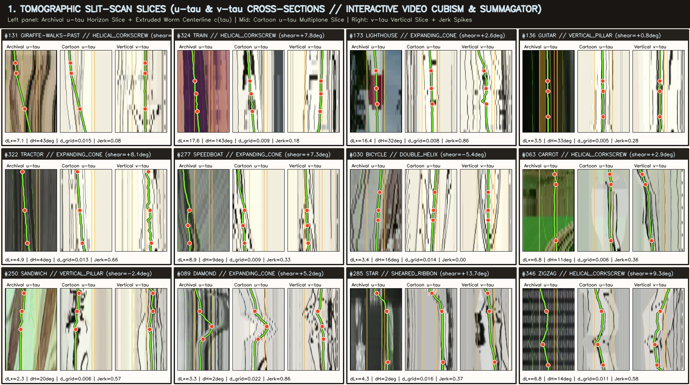
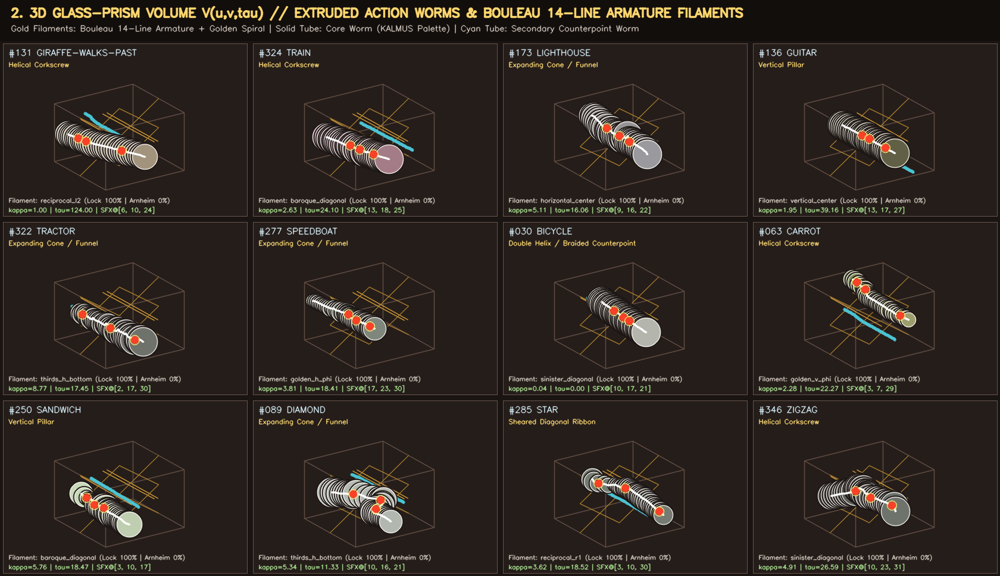
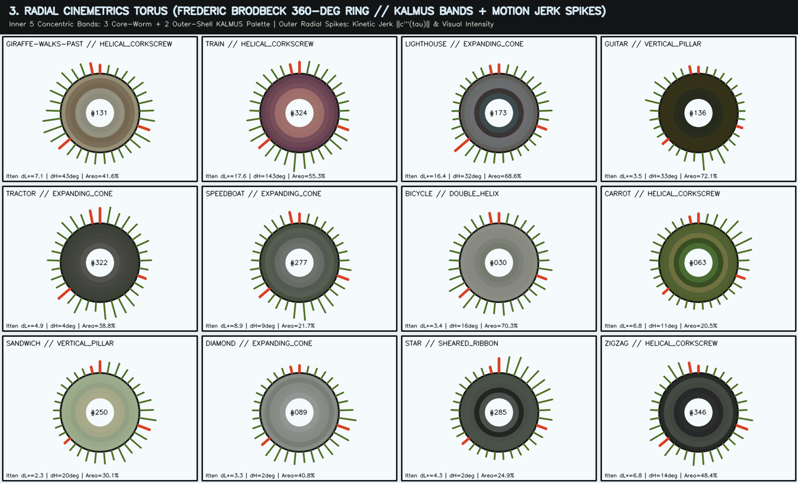
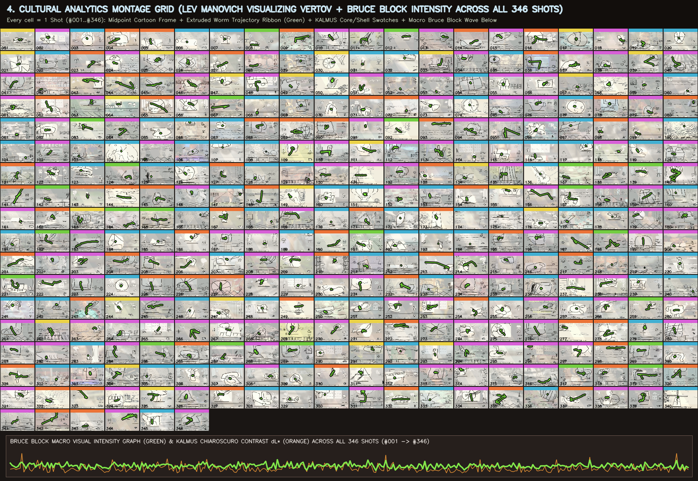

The 3D Spatiotemporal Cinema Worm Visualizer — \(\mathcal{V}(u, v, \tau)\) Across All 346 Cartoons
When you stack every 2D frame \((u, v) \in [0, 1]^2\) along the time axis \(\tau \in [0, T]\), each of our 346 multiplane cartoons stops being a flat slideshow and becomes a solid 3D Spatiotemporal Volume \(\mathcal{V}(u, v, \tau)\). Inside that 3D prism, the tracked character extrudes into a 3D Spatiotemporal Action Worm \(\mathbf{c}(\tau) = (u(\tau), v(\tau), \tau)\) with cross-sectional radius \(r(\tau)\), threading through the glowing filaments of Bouleau’s 14-Line Harmonic Armature, Rule of Thirds, and the Golden Ratio Spiral \((0.618, 0.382)\).
346 Volumes
3D Spatiotemporal Worms V(u,v,τ)
0.0124
Mean Armature Distance d_grid(τ)
11.4 CIE L*
Mean KALMUS Chiaroscuro ΔL*(τ)
1,038 Cues
Earshot SFX Synced to Jerk ||c'''(τ)||
Interactive 3D Spatiotemporal Volume Inspector
Select Any of the 346 Shots to Slice & Rotate Its 3D Spatiotemporal Worm
3D GLASS-PRISM VOLUME V(u,v,τ) // DRAG OR ROTATE YAW & PITCH
Topology
FREDERIC BRODBECK 360° RADIAL CINEMETRICS TORUS & KALMUS SWATCHES
Core Worm Palette (Subject):
Outer Shell Palette (Negative Space):
Itten Light–Dark (ΔL*):
Itten Cold–Warm Polarity (ΔH):
Contrast of Extension (A_worm/A):
Dominant 14-Line Filament:
Earshot Jerk SFX Cues:
SPACE-CURVE DIFFERENTIAL GEOMETRY // κ(τ), JERK ||c'''(τ)|| & ARMATURE TORQUE d_grid(τ)
Four Canonical Spatiotemporal Worm Atlases Across the 346-Shot Corpus
1. Slit-Scan Tomography · 2. 3D Glass Prisms · 3. Cinemetrics Torus · 4. Manovich Cultural Analytics Grid
1. TOMOGRAPHIC SLIT-SCAN SLICES (u-τ & v-τ CROSS-SECTIONS)

2. 3D GLASS-PRISM VOLUME RENDERING WITH 14-LINE ARMATURE FILAMENTS

3. FREDERIC BRODBECK 360° RADIAL CINEMETRICS TORUS ATLAS

4. LEV MANOVICH CULTURAL ANALYTICS MONTAGE GRID (ALL 346 SHOTS + BRUCE BLOCK WAVE)

Director's Spatiotemporal Grammar Reference
How 3D Worm Topology Decodes Camera Blocking, Parallax & Montage
| Cinematic Technique | 3D Spatiotemporal Worm Topology in (u, v, τ) | What It Reveals About the Director's Grammar |
|---|---|---|
| Locked Tripod + Static Blocking | Vertical Pillar: Straight cylinder parallel to the τ-axis inside a u = 1/3 or u = 0.5 grid channel | High stability/affinity (Wes Anderson, Ozu); near-zero spatial saccade load |
| Camera Pan / Lateral Track | Sheared Diagonal Ribbon: Parallel worms slanting at θ = arctan(du/dτ) across the u-τ plane | Slope du/dτ measures exact pan speed; foreground worms shear steeper than background worms, revealing 7-plane parallax depth |
| Dolly In / Snap Zoom | Expanding Cone / Funnel: Cross-sectional radius r(τ) flares outward across [0,1]² | Visualizes dramatic compression as Outer-Shell Negative Space volume shrinks |
| S-Curve / Golden Spiral Staging | Helical Corkscrew: Worm spirals around the τ-axis toward Golden Ratio node (0.618, 0.382) | Kinetic grace distributed across both u and v rather than flat horizontal sliding |
| Two-Shot / Dialogue Counterpoint | Double Helix / Braided Pillars: Hero worm and secondary counterpoint tube in Rabatment squares | Gap Δu(τ) between the two worms measures interpersonal or spatial counterpoint over the shot |